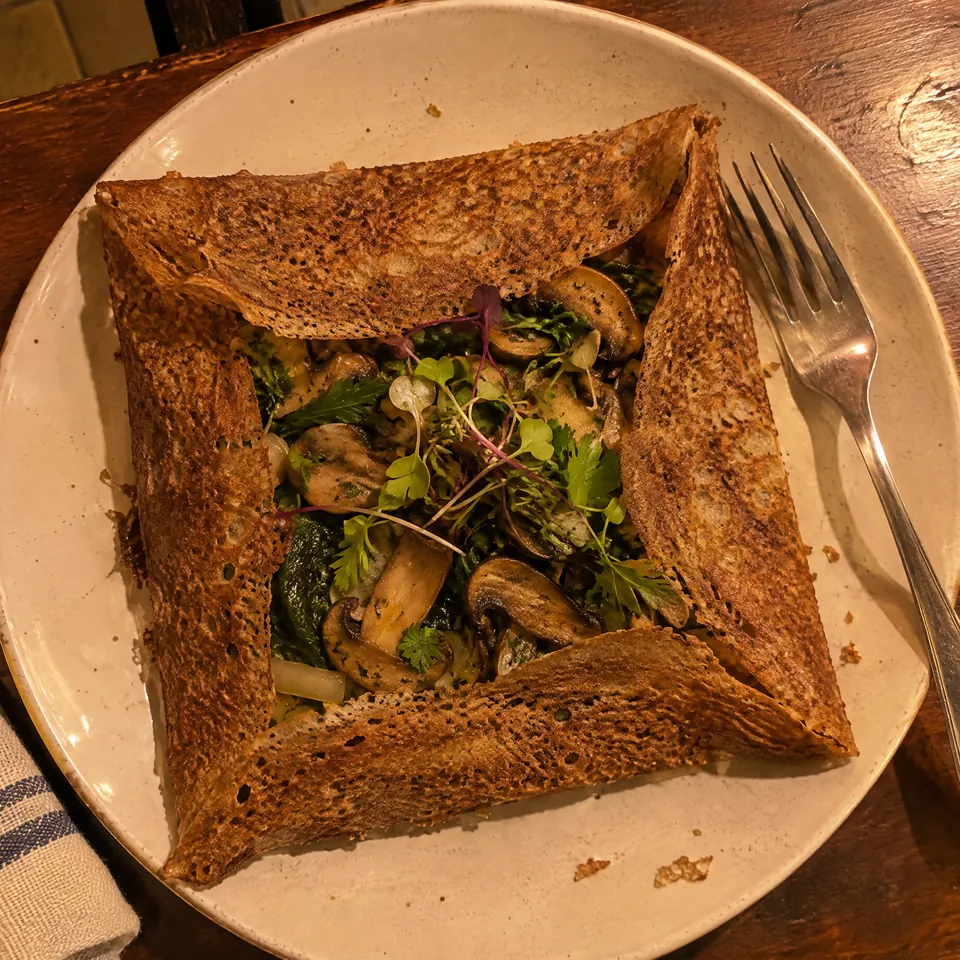
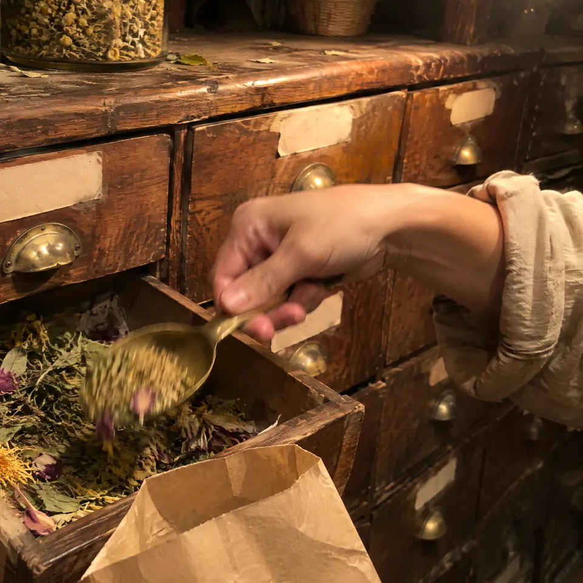
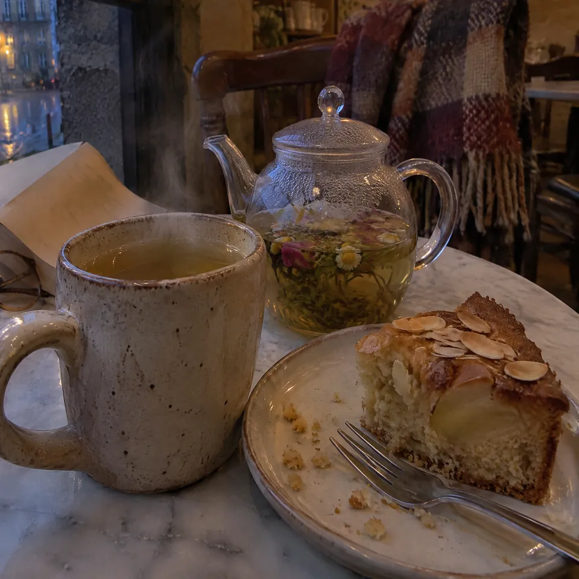

Des galettes de sarrasin, des plantes qu’on boit et qu’on mange, des soirées sur scène : quatre métiers sous un même toit, au 36 rue Vaneau, à Rennes.
Touchez la lune : elle saute comme une galette.
La crêperie végétarienne
À minuit, la lune tourne à la galette
Des galettes classiques, et d’autres aux plantes et aux micro-pousses. Sur la plaque d’à côté, c’est vous qui étalez la pâte.
La carte en attendant la vôtre
- Les galettes classiques
- .. €
- .. €
- Aux plantes et aux micro-pousses
- .. €
- .. €
- Le brunch, un dimanche par mois
- .. €
Vos galettes, leurs noms et vos prix : à compléter avec vos mots.

Posez le doigt sur la plaque et tournez : le rozell étale la pâte.
Bocal vide : ouvrez un tiroir de plante.
L’herboristerie
Un meuble d’herboriste, tout en tiroirs

Des plantes, des livres et des alcoolatures (des extraits de plantes macérées), rangés dans un meuble fait sur mesure. Ouvrez trois tiroirs de plantes : elles filent dans le bocal, et votre mélange est prêt à infuser.
Ouvrez un tiroir
Neuf tiroirs de plantes, un de livres, un d’alcoolatures, un de mélanges maison.
Chaque étiquette en pointillés attend le nom d’une de vos plantes.
Le salon de thé
Des mélanges maison, de plantes locales

Des thés et des infusions préparés ici, et des pâtisseries sans gluten pour les accompagner.
- Thés et infusions, en mélanges maison.. €
- Pâtisseries sans gluten.. €
- Le brunch, un dimanche par mois.. €
Dans la tasse : un mélange maison.
Retournez le sablier : ça infuse.
Le lieu culturel
Deux samedis par mois, le rideau se lève
Théâtre, chant, stand-up : des soirées sur place. Un dimanche par mois, le brunch. Et toute l’année, les balades botaniques contées et les ateliers de Julie.
Théâtre
Deux samedis par mois, le lieu devient une scène.
- Prochaine date
- À l’affiche
- Entrée.. €
Dans un mois : deux samedis de scène, un dimanche de brunch.
Lesquels : à vous de les annoncer ici, au fil des mois.
Celle qui tient le jardin
Julie Jeandey, herboriste et autrice
Certifiée de l’École bretonne d’herboristerie en 2023, Julie a d’abord été professeure des écoles. Elle raconte les plantes autant qu’elle les prépare : son carnet se feuillette à côté.
Le carnet de Julie
À Rennes et alentour
Des plantes et des histoires
De la classe au jardin
École bretonne d’herboristerie, 2023
À Rennes, minuit approche.
Venir
36 rue Vaneau, à Rennes
06 81 16 67 34Ouverture annoncée le mardi 17 novembre 2026.
- La crêperie
- .. h .. à .. h ..
- Le salon de thé
- .. h .. à .. h ..
- La boutique
- .. h .. à .. h ..
C’est rangé dans le tiroir de Julie.
Sur le vrai site, elle recevra votre demande. Ici, c’est une maquette : rien n’est envoyé.
Votre site peut avoir autant de pages que vous voulez.
Une page pour la carte, une pour chaque plante du meuble, une pour les soirées, une pour les balades : c’est vous qui voyez.
- La carte
- Chaque plante du meuble
- Les soirées
- Le brunch
- Les balades
- Les livres de Julie